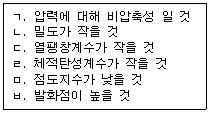
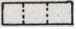
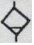
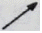
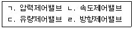

지게차운전기능사 (2009-09-27 기출문제)
1. 오토기관에 비해 디젤기관의 장점이 아닌 것은?
- 화재의 위험이 적다.
- 열효율이 높다.
- 가속성이 좋고 운전이 정숙하다.
- 연료소비율이 낮다.
(정답률: 73%)

2. 겨울철에 연료탱크를 가득 채우는 가장 주된 이유는?
- 연료가 적으면 증발하여 손실되므로
- 연료가 적으면 출렁거리기 때문에
- 공기 중의 수분이 응축되어 물이 생기기 때문에
- 연료 게이지에 고장이 발생하기 때문에
(정답률: 88%)
3. 과급기(Turbo charger)에 대한 설명 중 옳은 것은?
- 피스톤의 흡입력에 의해 임펠러가 회전한다.
- 가솔린 기관에만 설치된다.
- 연료 분사량을 증대시킨다.
- 실린더 내의 흡입 공기량을 증가시킨다.
(정답률: 59%)
4. 겨울철에 사용하는 엔진오일은 여름철에 사용하는 오일보다 점도의 상태는 어떤 것이 좋은가?
- 점도는 동일해야 한다.
- 점도가 높아야 한다.
- 점도가 낮아야 한다.
- 점도와는 아무런 관계가 없다.
(정답률: 63%)
5. 디젤기관에서 조속기의 기능으로 맞는 것은?
- 분사량 조정
- 분사시기 조정
- 부하량 조정
- 부하시기 조정
(정답률: 73%)
6. 유압계가 부착된 건설기계에서 유압계 지침이 정상으로 압력 상승이 되지 않았다. 그 원인으로 잘못된 것은?
- 오일 파이프의 파손
- 오일펌프의 고장
- 유압계의 고장
- 연료 파이프의 파손
(정답률: 54%)
7. 기관을 점검하는 요소 중 디젤기관과 관계없는 것은?
- 예열장치
- 점화장치
- 연료장치
- 압축장치
(정답률: 64%)
8. 피스톤 링에 대한 설명으로 틀린 것은?
- 압축가스가 새는 것을 막아 준다.
- 엔진 오일을 실린더 벽에서 긁어내린다.
- 압축 링과 인장 링이 있다.
- 실린더 헤드 쪽에 있는 것이 압축 링이다.
(정답률: 46%)
9. 디젤기관을 정지시키는 방법으로 가장 적합한 것은?
- 초크밸브를 닫는다.
- 연료공급을 차단한다.
- 기어를 넣어 기관을 정지한다.
- 축전지에 연결된 전선을 끊는다.
(정답률: 66%)
10. 엔진이 과열되는 원인이 아닌 것은?
- 물 펌프 작용 불량
- 냉각수량 부족
- 라디에이터 코어가 막힘
- 수온조절기가 열린 상태로 고장
(정답률: 72%)
11. 피스톤과 실린더 사이의 간극이 너무 클 때 일어나는 현상은?
- 엔진오일의 소비증가
- 압축압력 증가
- 실린더 소결
- 출력 증가
(정답률: 69%)
12. 운전석 계기판에 아래 그림과 같은 경고등이 점등 되었다면 가장 관련이 있는 경고등은?
- 엔진오일 압력 경고등
- 엔진오일 온도 경고등
- 냉각수 배출 경고등
- 냉각수 온도 경고등
(정답률: 58%)
13. 건설기계 차량에서 가장 큰 전류가 흐르는 것은?
- 콘덴서
- 발전기 로터
- 배전기
- 시동모터
(정답률: 51%)
14. 건설기계장비의 축전지 케이블 탈거에 대한 설명으로 적합하지 않은 것은?(오류 신고가 접수된 문제입니다. 반드시 정답과 해설을 확인하시기 바랍니다.)
- 절연되어 있는 케이블을 먼저 탈거한다.
- 아무 케이블이나 먼저 탈거한다.
- - 케이블을 먼저 탈거한다.
- 접지되어 있는 케이블을 먼저 탈거한다.
(정답률: 38%)
15. 납산축전지를 충전기로 충전할 때 전해액의 온도가 상승하면 위험한 상황이 될 수 있다. 최대 몇 ℃를 넘지 않도록 하여야 하는가?
- 5℃
- 10℃
- 25℃
- 45℃
(정답률: 73%)
16. 고장진단 및 테스트용 출력단자를 갖추고 있으며, 항상 시스템을 감시하고, 필요하면 운전자에게 경고 신호를 보내주거나 고장점검 테스트용 단자가 있는 것은?
- 제어유닛 기능
- 주파수 신호처리 기능
- 피드백 기능
- 자기진단 기능
(정답률: 74%)
17. 축전지의 자기 방전량 설명으로 적합하지 않은 것은?
- 전해액의 온도가 높을수록 자기 방전량은 작아진다.
- 전해액의 비중이 높을수록 자기 방전량은 크다.
- 날짜가 경과할수록 자기 방전량은 많아진다.
- 충전 후 시간의 경과에 따라 자기 방전량의 비율은 점차 낮아진다.
(정답률: 36%)
18. 기동 전동기의 전압이 24V 이고 출력이 5KW 일 경우 최대 전류는 몇 A 인가?
- 50A
- 100A
- 208A
- 416A
(정답률: 60%)
19. 하부 롤러, 링크 등 트랙부품이 조기 마모되는 원인으로 가장 적절한 것은?
- 일반 객토에서 작업을 하였을 때
- 트랙 장력 실린더에 그리스가 누유 될 때
- 겨울철에 작업을 하였을 때
- 트랙장력이 너무 팽팽했을 때
(정답률: 72%)
20. 모터그레이더에서 그리스 주입 개소가 아닌 것은?
- 프런트휠 베어링
- 파워 틸트 실린더
- 리닝 휠실린더
- 토크 컨버터
(정답률: 67%)
21. 굴삭기 스윙(선회) 동작이 원활하게 안 되는 원인으로 틀린 것은?
- 컨트롤 밸브 스풀 불량
- 릴리프 밸브 설정 압력 부족
- 터닝 조인트(Turning Joint) 불량
- 스윙(선회) 모터 내부 손상
(정답률: 39%)
22. 자동변속기의 구성품이 아닌 것은?
- 토크 변환기
- 유압제어 장치
- 싱크로메시 기구
- 유성기어 유닛
(정답률: 57%)
23. 수동변속기에서 클러치의 구성품에 해당 되지 않는 것은?
- 클러치 디스크
- 릴리스 레버
- 어저스팅 암
- 부스터
(정답률: 34%)
24. 타이어식 건설장비에서 조향 바퀴의 얼라인먼트 요소와 관련 없는 것은?
- 캠버
- 캐스터
- 토인
- 부스터
(정답률: 68%)
25. 지게차의 일반적인 조향 방식은?
- 앞바퀴 조향방식이다.
- 뒷바퀴 조향방식이다.
- 허리꺾기 조향방식이다.
- 작업조건에 따라 바꿀 수 있다.
(정답률: 83%)
26. 기중기의 작업 시 안전수칙으로 가장 거리가 먼 것은?
- 붐의 각을 20도 이하로 하지 말 것
- 붐의 각을 78도 이상으로 하지 말 것
- 운전반경 내에는 사람의 접근을 막을 것
- 가벼운 물건은 아우트리거를 고이지 말 것
(정답률: 78%)
27. 건설기계관리법상 제작자로부터 건설기계를 구입한 자가 별도로 계약하지 않는 경우에 무상으로 사후관리를 받을 수 있는 법정기간은?
- 6개월
- 12개월
- 18개월
- 24개월
(정답률: 62%)
28. 영업용 건설기계의 등록번호표 색칠로 맞는 것은?
- 백색 판에 흑색 문자
- 녹색판에 백색 문자
- 청색 판에 백색 문자
- 주황색 판에 흰색 문자
(정답률: 73%)
29. 교통정리가 행하여지고 있지 않은 교차로에서 우선순위가 같은 차량이 동시에 교차로에 진입한 때의 우선순위로 맞는 것은?
- 소형 차량이 우선한다.
- 우측도로의 차가 우선한다.
- 좌측도로의 차가 우선한다.
- 중량이 큰 차량이 우선한다.
(정답률: 59%)
30. 그림의 교통안전 표지는?
- 좌/우회전 금지표지이다.
- 양측방 일방 통행표지이다.
- 좌/우회전 표지이다.
- 양측방 통행 금지표지이다.
(정답률: 79%)
31. 건설기계 정기검사시 제동장치에 대한 검사를 면제받기 위한 제동장치 정비확인서를 발행하는 곳은?
- 건설기계대여회사
- 건설기계정비업자
- 건설기계부품업자
- 건설기계매매업자
(정답률: 88%)
32. 주행 중 앞지르기 금지장소가 아닌 것은?
- 교차로
- 터널 내
- 버스 정류장 부근
- 급경사의 내리막
(정답률: 74%)
33. 정차라 함은 주차 외의 정지 상태로서 몇 분을 초과하지 아니하고 차를 정지시키는 것을 말하는가?
- 3분
- 5분
- 7분
- 10분
(정답률: 70%)
34. 차마가 도로 이외의 장소에 출입하기 위하여 보도를 횡단하려고 할 때 가장 적절한 통행방법은?
- 보행자 유무에 구애받지 않는다.
- 보행자가 없으면 빨리 주행한다.
- 보행자가 있어도 차마가 우선 출입한다.
- 보도 직전에서 일시 정지하여 보행자의 통행을 방해하지 말아야 한다.
(정답률: 90%)
35. 건설기계의 조종 중 과실로 100만원의 재산피해를 입힌 때 면허 처분 기준은?(관련 규정 개정전 문제로 여기서는 기존 정답인 2번을 누르면 정답 처리됩니다. 자세한 내용은 해설을 참고하세요.)
- 면허 효력정지 7일
- 면허 효력정지 10일
- 면허 효력정지 15일
- 면허 효력정지 20일
(정답률: 68%)
36. 다음 중 건설기계의 범위에 속하지 않는 것은?
- 노상 안정 장치를 가진 자주식인 노상안정기
- 공기 토출량이 자주식인 모터그레이더
- 공기 토출량이 2.83세제곱미터 이상의 이동식인 공기압축기(매제곱 센티미터당 7킬로그램 기준)
- 펌프식, 포크식, 디퍼식 또는 그래브식으로 자항식인 준설선
(정답률: 46%)
37. 압력제어 밸브의 역할은?
- 일의 속도 결정
- 일의 크기 결정
- 일의 시간 결정
- 일의 방향 결정
(정답률: 60%)
38. 다음 보기에서 유압 작동유가 갖추어야 할 조건으로 모두 맞는 것은?

- ㄱ, ㄴ, ㄷ, ㄹ
- ㄴ, ㄷ, ㅁ, ㅂ
- ㄴ, ㄹ, ㅁ, ㅂ
- ㄱ, ㄴ, ㄷ, ㅂ
(정답률: 53%)
39. 유압펌프에서 소음이 발생할 수 있는 원인이 아닌 것은?
- 오일의 양이 적을 때
- 펌프의 속도가 느릴 때
- 오일 속에 공기가 들어 있을 때
- 오일의 점도가 너무 높을 때
(정답률: 51%)
40. 유압장치에서 드래인 배출기의 기호표시로 알맞은 것은?



(정답률: 72%)
41. 건설기계 작업 중 갑자기 유압회로 내의 유압이 상승되지 않아 점검하려고 한다. 내용으로 적합하지 않은 것은?
- 펌프로부터 유압발생이 되는지 점검
- 오일탱크의 오일량 점검
- 오일이 누출되었는지 점검
- 작업장치의 자기탐상법에 의한 균열 점검
(정답률: 73%)
42. 유체의 에너지를 이용하여 기계적인 일로 변환하는 기기는?
- 유압모터
- 유압펌프
- 오일탱크
- 원동기
(정답률: 65%)
43. 유압장치의 고장원인과 거리가 먼 것은?
- 작동유의 과도한 온도 상승
- 작동유에 공기, 물 등의 이물질 혼입
- 조립 및 접속 불완전
- 윤활성이 좋은 작동유 사용
(정답률: 86%)
44. 유압유의 점도에 대한 설명으로 틀린 것은?
- 온도가 상승하면 점도는 저하된다.
- 점성의 정도를 나타내는 척도이다.
- 온도가 내려가면 점도는 높아진다.
- 점성계수를 밀도로 나눈 값이다.
(정답률: 67%)
45. 다음 보기에서 유압회로에 사용되는 3 종류의 제어밸브로 모두 맞는 것은?

- ㄱ, ㄴ, ㄷ
- ㄱ, ㄴ, ㄹ
- ㄴ, ㄷ, ㄹ
- ㄱ, ㄷ, ㄹ
(정답률: 59%)
46. 유압 실린더 정비 시 옳지 않는 것은?
- 사용하던 ○-링은 면 걸레로 깨끗이 닦아 오일이 묻지 않게 조립한다.
- 분해 조립시 무리한 힘을 가하지 않는다.
- 도면을 보고 순서에 따라 분해 조립을 한다.
- 쿠션 기구의 작은 유로는 압축 공기를 불어 막힘 여부를 검사한다.
(정답률: 61%)
47. 적색 원형으로 만들어지는 안전 표지판은?
- 경고 표시
- 안내 표시
- 지시 표시
- 금지 표시
(정답률: 66%)
48. 감전재해 사고발생시 취해야 할 행동순서가 아닌 것은?
- 피해자가 지닌 금속체가 전선 등에 접촉되었는가를 확인한다.
- 설비의 전기 공급원 스위치를 내린다.
- 전원을 끄지 못했을 때는 고무장갑이나 고무장화를 착용하고 피해자를 구출한다.
- 피해자 구출 후 상태가 심할 경우 인공호흡 등 응급조치를 한 후 작업에 임하도록 한다.
(정답률: 69%)
49. 운반 작업 시 지켜야 할 사항으로 맞는 것은?
- 운반 작업은 장비를 사용하기보다 가능한 많은 인력을 동원하여 하는 것이 좋다.
- 인력으로 운반 시 무리한 자세로 장시간 취급하지 않도록 한다.
- 인력으로 운반 시 보조구를 사용하되 몸에서 멀리 떨어지게 하고, 가슴 위치에서 하중이 걸리게 한다.
- 통로 및 인도에 가까운 곳에서는 빠른 속도록 벗어나는 것이 좋다.
(정답률: 72%)
50. 복스 렌치를 오픈엔드 렌치보다 많이 권장하여 사용하는 가장 적합한 이유는?
- 가볍다.
- 값이 싸다.
- 다양한 크기의 볼트와 너트에 사용할 수 있다.
- 볼트와 너트 주위를 완전히 감싸게 되어있어 사용 중에 미끄러지지 않는다.
(정답률: 84%)
51. 사고의 직접원인으로 가장 적합한 것은?
- 유전적인 요소
- 성격결함
- 사회적 환경요인
- 불안전한 행동 및 상태
(정답률: 87%)
52. 일반가연성 물질의 화재로서 물질이 연소 된 후에 재를 남기는 일반적인 화재는?
- A급 화재
- B급 화재
- C급 화재
- D급 화재
(정답률: 76%)
53. 운반 및 하역 작업 시 착용복장 및 보호구로 적합하지 않는 것은?
- 상의 작업복의 소매는 손목에 밀착되는 작업복을 착용한다.
- 하의 작업복은 바지 끝 부분을 안전화 속에 넣거나 밀착되게 한다.
- 방독면, 방화 장갑을 항상 착용하여야 한다.
- 유해, 위험물을 취급 시 방호 할 수 있는 보호구를 착용한다.
(정답률: 85%)
54. 아세틸렌가스 용기의 취급 방법 중 틀린 것은?
- 용기의 온도는 60℃로 유지 할 것
- 용기는 반드시 세워서 보관 할 것
- 전도, 전락 방지 조치를 할 것
- 충전용기와 빈 용기는 명확히 구분하여 각각 보관 할 것
(정답률: 76%)
55. 6각 볼트/너트를 조이고 풀 때 가장 적합한 공구는?
- 바이스
- 플라이어
- 드라이버
- 복스 렌치
(정답률: 85%)
56. 장갑을 끼면 안전상 가장 적합하지 않은 작업은?
- 전기용접작업
- 해머작업
- 타이어 교환 작업
- 건설기계운전
(정답률: 74%)
57. 다음 중 가스안전영향평가서를 작성하여야 하는 공사는?
- 도로폭이 8m 이상인 도로
- 가스배관이 통과하는 지하보도
- 도로폭이 12m 이상인 도로
- 가스배관의 매설이 없는 철도 구간
(정답률: 74%)
58. 도시가스 배관을 아파트 단지 내 도로에 매설시 배관 상부와 지면과의 최소 이격 거리로 옳은 것은?
- 0.3m
- 0.6m
- 1m
- 1.5m
(정답률: 44%)
59. 굴착으로부터 전력케이블을 보호하기 위하여 설치하는 표시시설이 아닌 것은?
- 표지시트
- 지중선로 표시기
- 모래
- 보호관
(정답률: 77%)
60. 고압선 밑에서 건설기계에 의한 작업 중 안전을 위하여 지표에서부터 고압선까지의 거리를 측정하고자 할 때 맞는 것은?
- 메마른 긴 대나무를 이용하여 측정한다.
- 긴 각목을 이용하여 측정한다.
- 관할 한전사업소에 협조하여 측정한다.
- 직접 올라가서 측정한다.
(정답률: 88%)